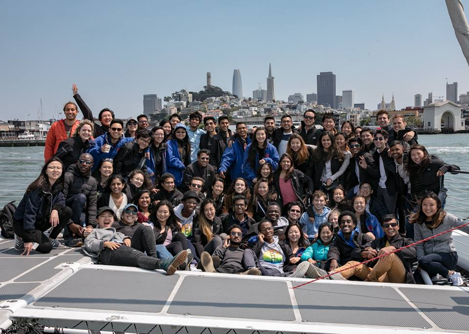

Kleiner Perkins Fellowship
A summer as a KP Fellow with a ton of amazing talks, people, experiences and swag
Meet The Fellows
What is the program?
The fellowship with a roughly 3% acceptance rate from 3000+ applicants selects a handful of engineering, design, and product focused students to work at a portfolio company of Kleiner Perkins. This includes a full internship experience with the portfolio company (Indiegogo in my case) as well as an added layer of community through the KP network with weekly+ events such as talks from luminaries and CEOs in the industry as well as fun, social events such as a Saturday spent boating and hiking on Angel Island. Also there’s a lot of free food, drinks, and jackets 😁
I am very grateful for the opportunity to have been part of the program and to this day wonder how I managed to slip through the cracks considering how accomplished and ambitious all of the other fellows were. I learned a lot about the VC world through the various talks and found a renewed motivation to work as an engineer in the SF tech industry as I realized how many opportunities there were to make positive change as a young person in tech.
Learning Areas
- VC mindset
- Personal goals in tech
- The power of meeting likeminded people
Status
I am no longer a fellow but can confidently say that I have made lifelong friends through the program and will have no reservations getting help with my career or future ventures from those within the KP network.
